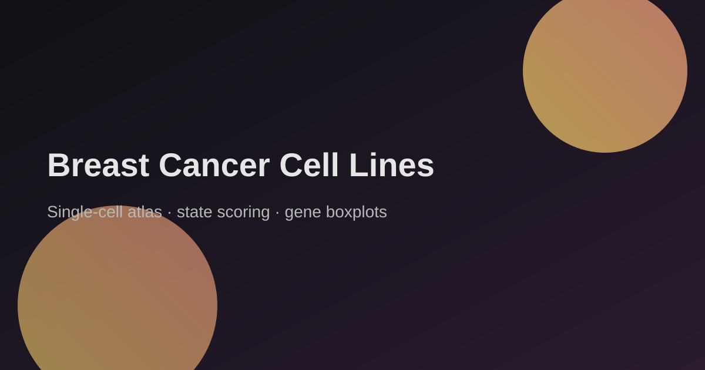
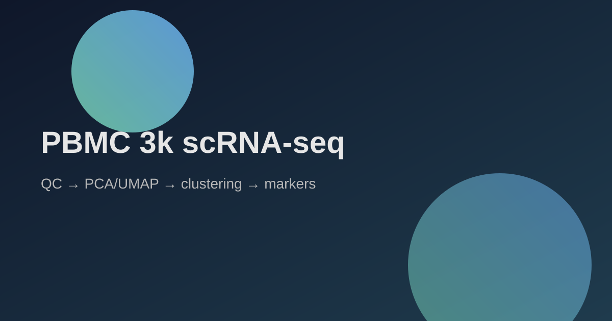

Breast cancer cell lines atlas
Project log · scRNA‑seq · 32 cell lines

I explored a single‑cell atlas of breast cancer cell lines to map expression states across epithelial, mesenchymal, proliferative, and stress programs.
Highlights:
- QC → PCA/UMAP → clustering with cell‑line context from barcodes
- DESeq2-backed marker discovery with per-cluster significance plots
- State scoring (epithelial/mesenchymal/proliferative/stress)
- Gene‑level boxplots for HER2/ER signaling and cell‑cycle markers
This is exploratory, not clinical—useful for understanding how cell lines separate and which programs dominate each cluster.
View report
Project README
PBMC 3k scRNA‑seq pipeline
Project log · scRNA‑seq · Seurat + Arrow

Just shipped a full single‑cell RNA‑seq pipeline on PBMC 3k and published it as a clean, reproducible analysis artifact.
What’s inside:
- QC → normalization → HVG selection → PCA/UMAP → clustering → DESeq2 marker discovery
- DESeq2 marker significance plots for cluster-level interpretation
- Manual cell‑type labeling using canonical PBMC markers
- Arrow/Feather exports for portable downstream use
- A runbook so anyone can reproduce the results end‑to‑end
I wanted this to feel like something you’d actually hand off in a real team: clear assumptions, reproducible steps, and outputs that can feed the next stage without rework.
If you’re doing scRNA‑seq, data tooling, or pipeline design, I’d love feedback. I’ll drop the GitHub link in the comments.
View report
Project README